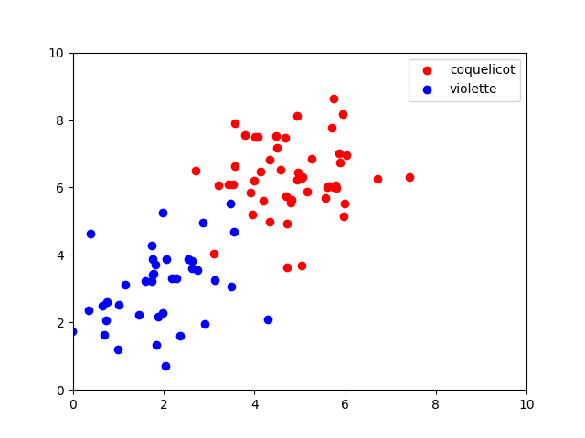
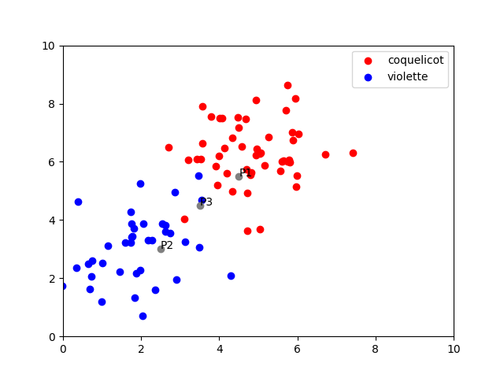
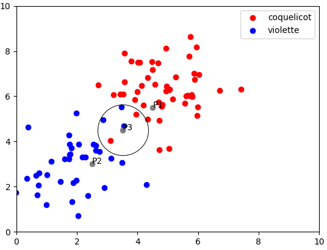
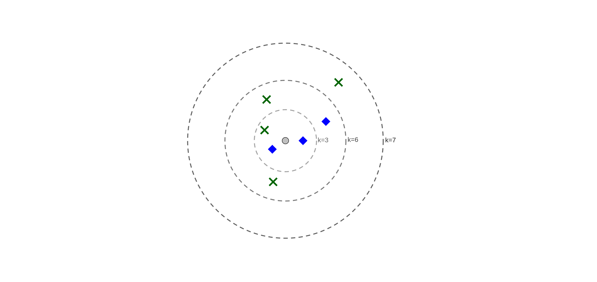
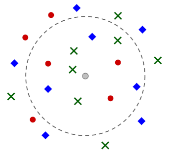
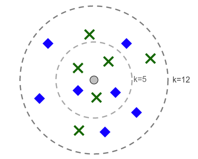

C17 Algorithme des k plus proches voisins
Activités
 Activité 1 : Classification
Activité 1 : Classification
-
Dans un champ, à l'état sauvage deux types de fleurs ont poussés : des coquelicots et des violettes. On a représenté ci-dessous par un schéma la position de ces fleurs dans le champ.
- les points rouges représentent des coquelicots
- les points bleus représentent des violettes
 Comme vous pouvez le constater, en dépit de certaines variations, les violettes semblent plus pousser dans la partie inférieure gauche du champ tandis que les coquelicots poussent plutôt vers la partie centrale du champ.
Trois nouvelles pousses apparaissent dans ce champ, on les a représenté par des points de couleurs grises et on les identifie avec les noms
P1, P2etP3comme représenté ci-dessous :  On cherche à prédire si ces pousses sont des coquelicots ou des violettes.- Que peut-on dire pour la pousse
P1? - Même question pour la pousse
P2. - Que dire du cas de
P3? Peut-on répondre avec le même niveau de confiance que pourP1etP2? - Ci-dessous on a tracé un cercle de façon à faire apparaître les 5 voisins les plus proches de la pousse P3. Prédire le cas de
P3en choisissant l'espèce majoritaire de ce cercle.  - A la question précédente, on a prédit le cas de
P3avec l'algorithme des k plus proches voisins. Quel est le principe de cet algorithme ? Avec quelle valeur de k a-t-il été utilisé ?
-
On considère le nouvel exemple suivant dans lequel la donnée à classer est représentée par le point gris central: 
- Quel est le résultat de l'algorithme des k plus proches voisins lorsque k=3 ?
- Même question lorsque k=6.
- Même question lorsque k=7.
- Que peut-on dire pour le résultat prédit par l'algorithme suivant les valeurs de k ?
- Quelles valeurs de k permettent d'éviter les cas d'égalités ?
Activité 2 : Mise en oeuvre en Python
Jupyter Notebook Dans cette activité, vous aurez aussi besoin du jeu de données suivant : Jeu de données
Cours
Vous pouvez télécharger une copie au format pdf du diaporama de synthèse de cours présenté en classe :
Attention
Ce diaporama ne vous donne que quelques points de repères lors de vos révisions. Il devrait être complété par la relecture attentive de vos propres notes de cours et par une révision approfondie des exercices.
QCM
1. A quelle catégorie appartient l'algorithme des k plus proches voisins ?
- a) Algorithmes de classification et d'apprentissage
- b) Algorithmes de tri
- c) Algorithmes gloutons
- d) Algorithmes de recherches de chemins
- a) Algorithmes de classification et d'apprentissage
- b)
Algorithmes de tri - c)
Algorithmes gloutons - d)
Algorithmes de recherches de chemins
2. Quelle est l'affirmation correcte ?
- a) L'algorithme des k plus proches voisins peut donner des résultats différents suivant les valeurs de k
- b) L'algorithme des k plus proches voisins donne toujours le même résultat suivant les valeurs de k
- c) On ne peut pas modifier la valeur de k dans l'algorithme des k plus proches voisins
- d) La valeur de k doit être impair dans l'algorithme des k plus proches voisins
- a) L'algorithme des k plus proches voisins peut donner des résultats différents suivant les valeurs de k
- b)
L'algorithme des k plus proches voisins donne toujours le même résultat suivant les valeurs de k - c)
On ne peut pas modifier la valeur de k dans l'algorithme des k plus proches voisins - d)
La valeur de k doit être impair dans l'algorithme des k plus proches voisins
3. Comment est classé la donnée représentée par le point gris central en utilisant l'algorithme des 10 plus proches voisins ?

- a) La nouvelle donnée est un rond rouge
- b) La nouvelle donnée est un losange bleu
- c) La nouvelle donnée est une croix verte
- d) L'algorithme échoue et ne peut pas préduire
- a)
La nouvelle donnée est un rond rouge - b)
La nouvelle donnée est un losange bleu - c) La nouvelle donnée est une croix verte
- d)
L'algorithme échoue et ne peut pas préduire
Exercices
Exercice 1 : Appliquer l'algorithme des k plus proches voisins

Quel sera le résultat de l'algorithme des \(k\) plus proches voisins pour classer le point gris central lorsque :
- \(k=5\) ?
- \(k=12\) ?
Exercice 2 : Un cas particulier
On considère un exemple élémentaire de l'algorithme des \(k\) plus proche voisin. On prend \(k=1\) et chaque classe ne contient qu'un seul et unique point :
classe1 = [(2,4))]
classe2 = [(-2,-2)]
- Expliquer le fonctionnement de l'algorithme dans ce cas particulier.
- Ecrire la fonction
distance(point1,point2)qui prend comme argument deux tuplespoint1=(x1,y1)etpoint2=(x2,y2)et renvoie la distance euclidienne entre les points de coordonnées \((x1,y1)\) et \((x2,y2)\). - Donner le résultat de l'algorithme des \(k\) plus proches voisins pour les points suivants :
- \((-2;5)\)
- \((-2;-4)\)
- \((0;1)\)
-
Tracer un repère orthonormé, placer les points \(A=(2;4)\) et \(B=(-2;-2)\). Déterminer et représenter la zone où se situent les points de la
classe1et ceux de laclasse2.Aide
Penser à utiliser la médiatrice du segment \([AB]\) après avoir rappelé la propriété de cette droite.
Exercice 3 : Distance de Hamming
On définit la distance de Hamming entre deux chaines de caractères de même longueur comme le nombre de fois où ces deux chaines ont un caractère différent au même endroit. A titre d'exemples :
"ramer" et "taper" ont une distance de 2 ( r\(\neq\)t et m\(\neq\)p),
"python" et "java" ne sont pas comparables car ils n'ont pas la même longueur,
"tri" et "rit" ont une distance de 3 (pour tous les emplacements, les caractères de chacune des deux chaines sont différents).
-
Donner les distances de Hamming entre les chaines suivantes :
- "orange" et "ananas"
- "fable" et "table"
- "Alan" et "Ada"
- "facile" et "habile"
-
Ecrire une fonction Python
distance_hamming(chaine1,chaine2)qui renvoie la distance de Hamming entre les deux chaines passées en paramètre. La fonction ne renvoie rien lorsque les deux chaines n'ont pas la même longueur.Aide
On rappelle qu'on accède au ième caractère d'une chaine
chaineà l'aide de la notation crochets :chaine[i]
Exercice 4 : Classification des couleurs
La perception des couleurs peut varier en fonction des individus, le but de l'exercice est de classer une couleur donnée au format (R,V,B) dans l'une des classes suivantes : rouge, vert, bleu, jaune, orange, rose, mauve, gris, blanc, noir et marron.
- Créer le jeu de données d'après votre propre perception des couleurs. Vous pouvez créer une application javascript générant au hasard des couleurs puis les classer suivant votre perception ou utiliser une application en ligne.
- Ecrire une fonction python calculant la distance euclidienne entre deux couleurs au format (R,V,B)
- Utiliser l'algorithme des k plus proches voisins afin de prédire le classement d'une nouvelle couleur et comparer avec votre propre classement.
Note
Cet exercice s'inspire de cette application web
Exercice 5 : Idées de mini-projets
-
Utiliser un algorithme des k plus proches voisins pour prédire l'origine latine ou grecque d'un mot
Aide
- commencer par constituer un jeu de données déjà classées (donc une liste de mots dont vous connaissez l'origine)
- définir une distance entre deux données (on peut par exemple utiliser la distance de Hamming)
- tester plusieurs valeurs possibles pour le paramètre \(k\)
-
Utiliser un algorithme des k plus proches voisins pour prédire la survie des passagers du titanic. Les données sont à récupérer sur kaggle.